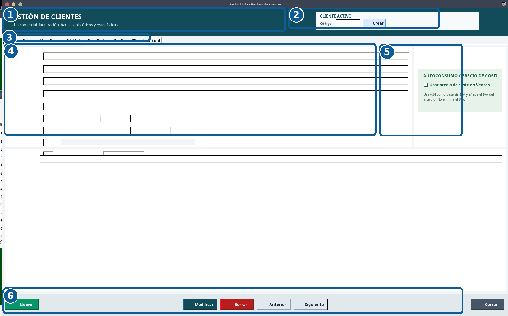
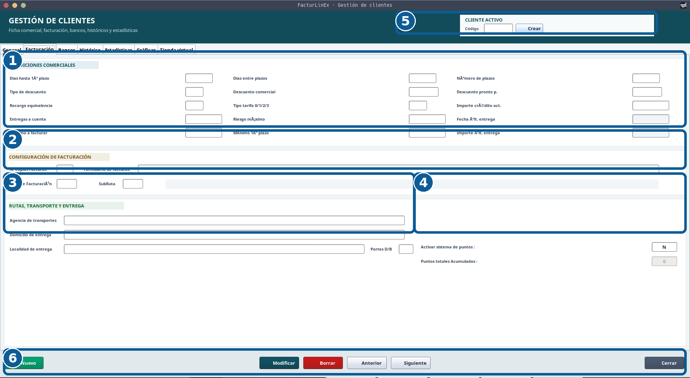
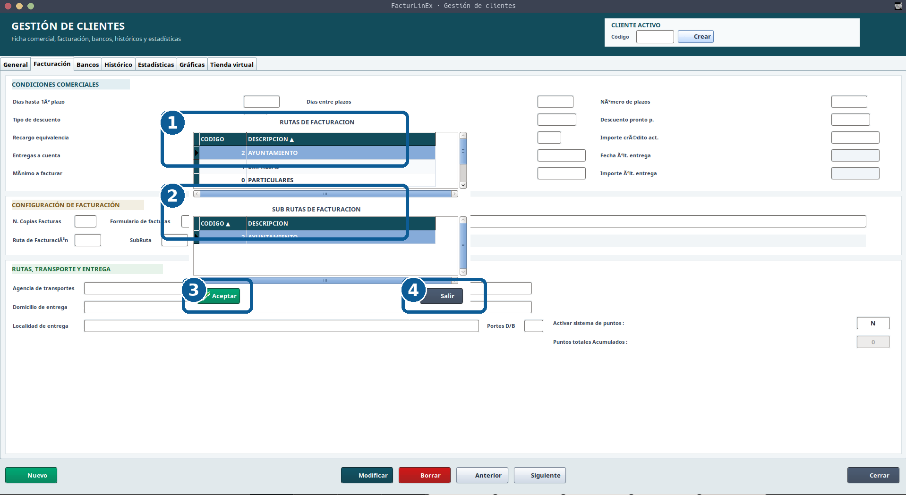
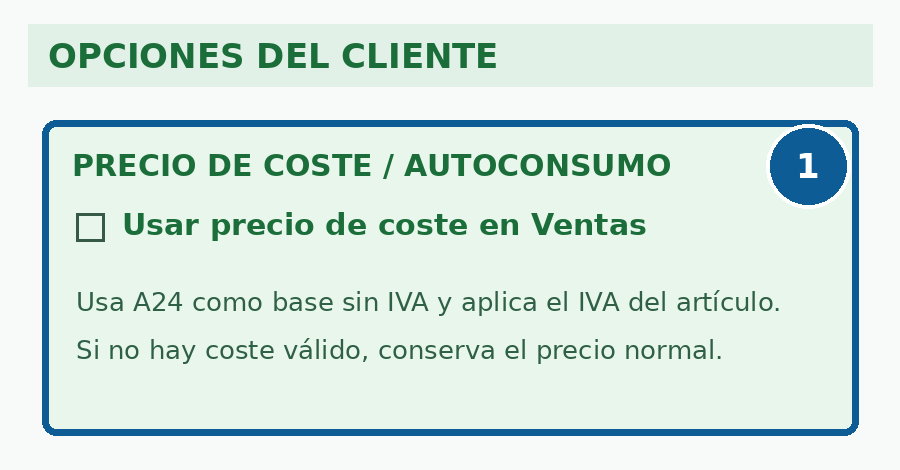

Clientes
Edición v1.2 · Mantenimiento y solución de problemas ilustrado
3.1 Visión general de la ficha #
La ficha de Clientes centraliza datos generales, condiciones comerciales, facturación, bancos, históricos, estadísticas, gráficas y opciones especiales. La cabecera mantiene visible el cliente activo y el campo Código es el acceso principal.

| N.º | Zona | Uso principal |
|---|---|---|
| 1 | Cabecera | Identifica el módulo y su finalidad. |
| 2 | Cliente activo | Código, acción Crear y nombre de la ficha cargada. |
| 3 | Pestañas | General, Facturación, Bancos, Histórico, Estadísticas, Gráficas y Tienda virtual. |
| 4 | Datos de la ficha | Información fiscal, comercial, contacto, observaciones y avisos. |
| 5 | Opciones especiales | Incluye el precio de coste para autoconsumo mediante C57. |
| 6 | Acciones | Nuevo, Modificar, Borrar, Anterior, Siguiente y Cerrar. |
3.2 Acceso, foco inicial y cliente activo #
Al abrir Clientes, el foco debe situarse en Código. Esto permite consultar una ficha, introducir el siguiente código propuesto o iniciar un alta sin utilizar el ratón.
- Introduzca un código existente para cargar su ficha.
- Use Crear cuando el código propuesto deba convertirse en una nueva ficha.
- Compruebe el nombre mostrado en Cliente activo antes de modificar.
- ESC equivale a Cerrar en la página principal; un selector o diálogo abierto se atiende primero.
- La búsqueda general se abre centrada, en tamaño medio y con el grid preparado para teclado.
3.3 Consultar, crear y modificar #
- Introduzca el código o busque por nombre, razón social o NIF/CIF/DNI/NIE.
- Confirme el cliente activo.
- Revise General, Facturación, Bancos y opciones especiales.
- Pulse Modificar y cambie únicamente los datos necesarios.
- En un alta, compruebe que la entidad no existe con otro código.
3.4 Facturación y condiciones comerciales #
Esta pestaña reúne plazos, descuentos, recargo de equivalencia, riesgo, entregas a cuenta, formularios de factura, rutas y sistema de puntos.

| N.º | Zona | Comprobaciones |
|---|---|---|
| 1 | Condiciones comerciales | Plazos, descuentos, recargo, tarifa, crédito, riesgo y entregas. |
| 2 | Configuración de facturación | Copias, formulario, ruta y subruta. |
| 3 | Rutas y entrega | Agencia, domicilio, localidad y portes. |
| 4 | Puntos | Activación para el cliente y puntos acumulados. |
| 5 | Cliente activo | Código y nombre de la ficha editada. |
| 6 | Acciones | Modificar, navegar o cerrar. |
- Revise descuento comercial, pronto pago, tarifa, recargo y riesgo máximo.
- Las opciones C41, C42, C55 y C56 deben permanecer visibles cuando sean aplicables.
- Formulario, ruta y subruta deben elegirse mediante sus selectores.
- La activación global de puntos no basta: también debe habilitarse en el cliente.
3.5 Selectores de formulario, rutas y subrutas #
Los botones auxiliares permiten elegir valores válidos sin memorizar códigos. En los grids, una flecha en la cabecera indica la columna y el sentido de ordenación.

| N.º | Elemento | Uso |
|---|---|---|
| 1 | Rutas | Listado principal. |
| 2 | Subrutas | Valores dependientes de la ruta. |
| 3 | Aceptar | Aplica la selección. |
| 4 | Salir | Cierra sin aplicar una selección nueva. |
3.6 Cliente a precio de coste / autoconsumo #

Ventas utiliza A24 como base sin IVA y aplica el IVA del artículo. La opción no elimina el impuesto. Si no existe un coste válido, debe conservarse el precio normal.
3.7 Búsqueda y coincidencias de NIF #
Cuando un NIF coincide con varias fichas, deben mostrarse todas las coincidencias. No se selecciona automáticamente el primer registro.
- Compare razón social, dirección, centro, departamento y código.
- Revise documentos y saldos antes de unificar duplicados.
- Normalice espacios, guiones, puntos y mayúsculas.
3.8 Bancos, histórico, estadísticas, gráficas y tienda virtual #
Estas pestañas permiten mantener datos bancarios, consultar la relación comercial, estudiar estadísticas y gráficas y preparar información para tienda virtual.
- Use los históricos como consulta, sin sustituir los documentos originales.
- Compruebe la flecha al ordenar grids.
- No publique datos incompletos.
- Confirme autorización antes de cambiar datos bancarios.
3.9 Modificación, borrado y trazabilidad #
Revise documentos pendientes, créditos, albaranes y facturas antes de modificar datos fiscales o eliminar una ficha.
3.10 Lista de comprobación #
- Foco en Código y cliente activo correcto.
- NIF normalizado y coincidencias revisadas.
- Datos fiscales y de contacto completos.
- Forma de pago, plazos, descuentos, tarifa, recargo y riesgo revisados.
- Formulario, ruta y subruta correctos.
- C41, C42, C55, C56 y C57 comprobados.
- Puntos configurados de forma coherente.
- Selectores legibles y ordenables.
- Modificar guarda solo los cambios previstos.
- ESC respeta paneles y ediciones pendientes.